- ↔ 기호는 필요충분조건(if and only if)을 의미한다.
1.1 SYSTEMS OF LINEAR EQUATIONS
선형 방정식
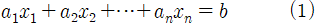
* b와 계수 a1,...,an은 실수 또는 복소수이다.
선형방정식 계(system of linear equations) 또는 선형 계(linear system)
같은 변수로 연결된 하나 또는 그 이상의 선형 방정식의 모음이다.
예
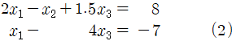
해(solution)
x1,...,xn 값들이 s1,...,sn 값들로 대체될 때 등식을 똑같이 참으로 만드는 숫자들의 목록 (s1,s2,...,sn) 이다. 예를 들면 (5, 6.5, 3)은 2*5 - 6.5 +1.5*3 = 8 을 만족하면서 5 - 4*3 = -7을 동시에 만족하므로 (2)의 해답이다.
해 집합(solution set)
해의 모음이다. 두 개의 선형 체계가 같은 해집합을 가지면 두 체계가 같다고 말한다. (equivalent)
x1 - 2x2 = -1
-x1 + 3x2 = 3
위의 두 식은 Fig. 1에서 직선으로 표현되고 두 직선이 만나는 지점이 두 식의 해집합이다.
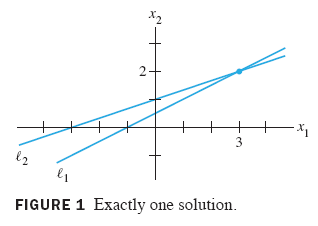
(a) x1 - 2x2 = -1 (b) x1 - 2x2 = -1
-x1 + 2x2 = 3 -x1 + 2x2 = 1
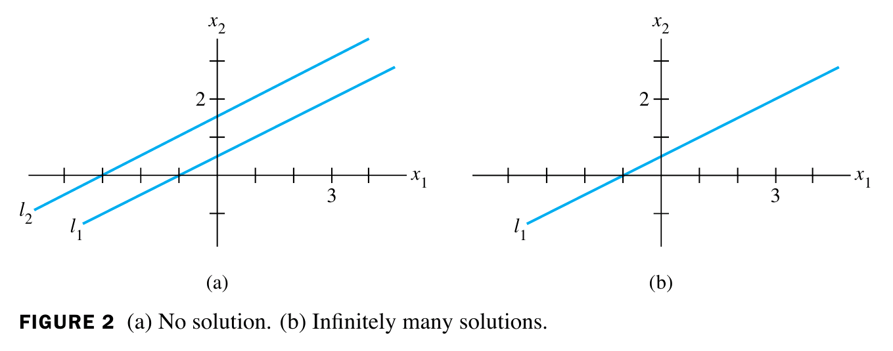
Fig. 1과 Fig. 2의 결론: 선형방정식계는 해가 0개거나 1개거나 ∞개이다. |
선형방정식계가 하나의 해 또는 무수히 많은 해를 가지고 있으면 일관적이다(consistent), 해가 없으면 일관적이지 않다(inconsistent)라고 말한다.
Matrix Notation
행렬(matrix)
직사각형 배열에 축약돼 기록되는 선형 체계의 필수적인 정보
계
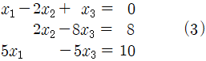
계수 행렬 (coefficient matrix or matrix of coefficients)
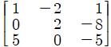
첨가 행렬 (augmented matrix)
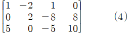
행렬 크기 (matrix size)
열과 행을 얼마나 가졌는지를 표시한다. 위의 첨가 행렬 (4)는 3개행, 4개열을 가졌으므로 3x4 (read 3 by 4) 행렬이다.
Solving a Linear System
EXAMPLE 1 (3)을 풀어라.
SOLUTION (1,0,-1)
삼각 모양(triangular)
행렬의 모양이 삼각 형태를 이루는 것을 말한다
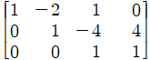
첨가 행렬에서 기본적인 행 연산(ELEMENTARY ROW OPERATIONS) 1. (치환, Replacement) 한 행을 그 행과 다른 행의 배수의 합으로 치환해라. 2. (교환, Interchange) 두 행을 교환해라. 3. (크기조정, Scaling) 한 행의 모든 요소를 0이 아닌 상수와 곱해라. |
행 동치 (row equivalence, 기호 ~)
어떤 행렬을 다른 행렬로 변환하는 일련의 행 연산이 있다면 이것을 행 동치라고 부른다. 두 행렬이 행 동치라면 행 연산의 역변환(reversible)을 통해 원래 행렬로의 변환이 가능하다.
만약 두 선형계의 첨가 행렬이 행 동치라면 두 계는 같은 해집합을 갖는다. |
Existence and Uniqueness Questions
선형계에 대한 기본적인 질문 두 가지 1. 계가 일관적인가; 즉, 적어도 하나 이상의 해가 존재하는가? 2. 해가 존재한다면 유일한 해인가; 즉, 해가 유일무이한가? |
1.2 ROW REDUCTION AND ECHELON FORMS
행렬에서 0이 아닌 행 또는 열은 0이 아닌 성분이 적어도 한개인 행 또는 열을 말한다.
선행 성분(leading entry)
0이 아닌 행에서 가장 왼쪽에 있는 성분
정의 직사각형 행렬이 다음 세 가지 속성을 가지면 사다리꼴 형태(echelon form)이다. 1. 모든 0이 아닌 행이 0인 행 위에 있다. 2. 어떤 행의 선행성분은 그 행 바로 위에 있는 행의 선행성분 오른쪽에 있는 열에 있다. 3. 선행성분 아래에 있는 열의 모든 성분은 0이다. 사다리꼴 형태인 행렬이 다음을 만족하면 기약 사다리꼴 행렬(reduced echelon form(REF) or reduced row echelon form(RREF))이다. 4. 각 0이 아닌 행의 선행 성분은 1이다. 5. 각 행의 선행 성분 1은 해당 열에서 유일하게 0이 아닌 성분이다. |
* 기약은 더 이상 인수분해가 안됨을 말한다.
사다리꼴 행렬(echelon matrix)
사다리꼴 형태를 가진 행렬
사다리꼴행렬 예제
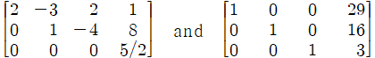
사다리꼴형태 행렬
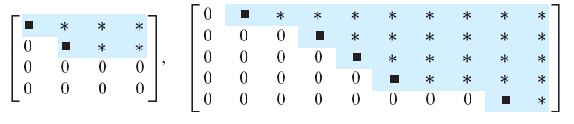
기약사다리꼴형태 행렬
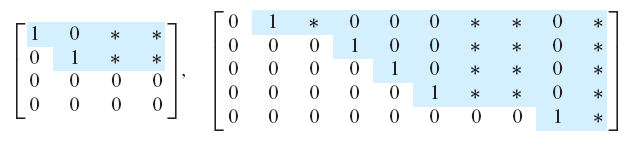
■는 0이 아닌 모든 수, *는 0을 포함한 모든 수이다.
정리 1 - 기약사다리꼴형태의 유일성 각 행렬은 유일하게 기약사다리꼴행렬하고만 행 동치이다. (증명 → Appendix A) |
Pivot Positions
정의 행렬에서 회전축 위치(pivot position)는 기약사다리꼴행렬에서 선행하는 1과 부합하는 행렬의 장소이다.회전축 열(pivot column)은 회전축 위치를 담고 있는 열이다. |
위의 사다리꼴형태 행렬에서 ■은 회전축 위치이다.
The Row Reduction Algorithm
EXAMPLE 3 다음 행렬을 사다리꼴형태 그리고 기약사다리꼴형태로 변환하기 위해서 기본 행연산을 적용하라.
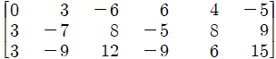
SOLUTION
1단계: 0이 아닌 최자측 열로 시작하라. 이 열은 회전축 열이다. 회전축 위치는 가장 위이다.
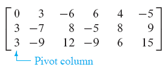
2단계: 회전축 열에 있는 0이 아닌 성분을 회전축으로 선택하라. 필요하면 행을 바꿔라.
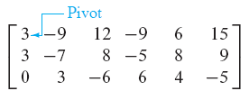
3단계: 회전축 아래에 있는 모든 성분을 0으로 만들기 위해 행치환연산을 사용하라.
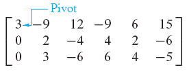
4단계: 다음 열에서 회전축 위치를 가진 행을 찾아라. 부분 행렬에 1-3단계를 적용하고 0이 이 아닌 행렬이 없을 때까지 반복하라.
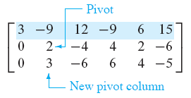
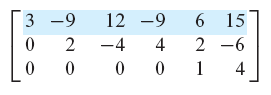
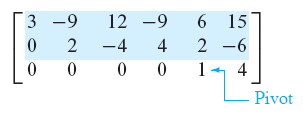
5단계: 최우측 회전축으로 시작하고 상측,좌측 순으로 작업하면서 각 회전축 위를 전부 0으로 만들어라. 만약 회전축이 1이 아니면 크기조정 연산을 사용해 1로 만들어라.
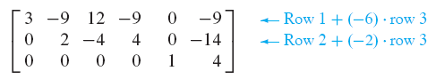
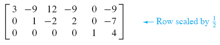
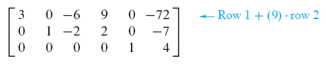
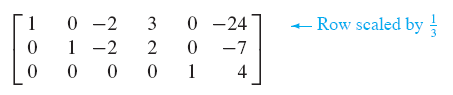
1-4단계 조합을 행 축소 알고리즘의 사전 단계(forward phase of the row reduction algorithm)라고 부른다.
수와 관련된 참고사항 위의 2단계에서 컴퓨터 프로그램은 보통 가장 큰 절대값을 가진 열에 있는 성분을 회전축으로 선택한다. 부분 회전축(partial pivoting)이라고 하는 이 전략은 계산에서 반올림(roundoff) 오류를 감소시키기 때문에 이용된다. |
Solutions of Linear Systems
기본 변수(basic variable or leading variable)
행렬에서 회전축 열과 관련있는 변수
자유 변수(free variable)
자유롭게 값을 정할 수 있는 변수
자유 변수가 어떤 값을 가졌는지에 따라 모든 해가 결정된다.
예제
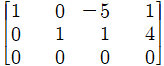
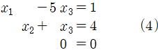
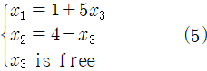
Parametric Descriptions of Solution Sets
매개변수 기술(parametric description)
특정 변수를 매개변수처럼 이용해 해집합을 기술하는 것이다. 해가 없는 경우 매개변수 기술을 할 수 없다.
예제: (4)에서 x2를 매개변수로 사용하기
2번식을 5x2 = 20 - 5x3로 만든 후 1번식과 더하면 다음 계가 나온다.
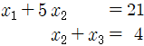
약속 일관성을 위해 자유 변수에 대해서만 매개변수 기술을 하기로 한다.
Back-Substitution
후치환(back-substitution)
제일 뒤에 있는 항을 치환해가며 계를 풀어가는 방식
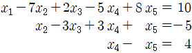
위 계에서 3번식을 x4로 치환해 2번식에 대입한다. 3번식을 치환한 x4식과 2번식을 치환한 x2식을 1번식에 모두 대입한다.
손으로 계산할 때 오류를 줄이기 위한 최고의 전략은 기약사다리꼴형태로 계를 푸는 것이다!
수와 관련된 참고사항 일반적으로 행 축소의 사전단계는 후치환보다 시간이 오래 걸린다. 계를 풀기 위한 알고리즘은 flop으로 측정된다. flop은 두 개의 floating point 숫자에 대한 한 개의 산술 연산(+,-,*,/)이다. |
Existence and Uniqueness Questions
정리 2 - 존재와 유일성 정리 선형계는 첨가행렬의 사다리꼴 형태가 다음 형태의 행을 갖지 않으면 일관적이다. 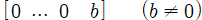 선형계가 일관적이면 해집합은 (i) 자유 변수가 없을 때 유일 해를 갖거나 (ii) 최소 한 개 이상의 자유 변수가 있을 때 무수히 많은 해를 갖는다. |
선형계를 풀기 위해 행축소 사용하기
|
1.3 VECTOR EQUATIONS
※ "4장 벡터 공간"을 배우기 전까지 벡터를 단순히 숫자로 구성된 정렬된 목록이라고 정의한다.
Vectors in R2
열 벡터(column vector) 또는 벡터(vector)
한 개의 열만 있는 벡터
R2에서 R은 실수(real number), 지수 2는 벡터 성분이 2개임을 말한다.
R2에서 두 벡터의 성분이 모두 같으면 두 벡터는 같다라고 한다.
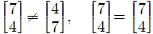
(벡터는 정렬된 목록이기 때문에 전자는 같지 않다)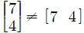
(모양이 다르므로 같지 않다)- 두 벡터 u,v의 합 u+v는 두 벡터의 성분을 더하면 된다.
- 스칼라곱 = 스칼라 c와 벡터 u의 곱 (cu)
Geometric Descriptions of R2
열벡터는 정렬되어 있으므로 좌표 체계에서 기하학적 점(geometric point)으로 표현할 수 있다.
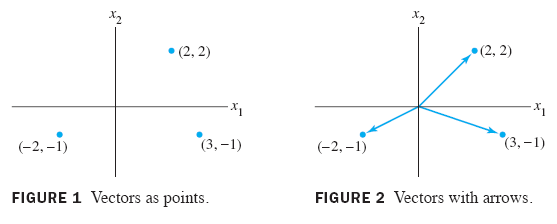
*Figure 2에서 화살표는 중요값을 가지지 않는다.
평행사변형 덧셈 법칙 (Parallelogram Rule for Addition) R2에 있는 u,v가 평면에서 점으로 표시된다면 u+v는 다른 꼭지점이 u,0,v인 평행사변형의 앞쪽 점과 대응한다. (Figure 3) |
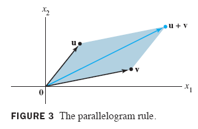
Vectors in R3
R3에 있는 벡터는 3x1 열벡터이다. 다음과 같이 3차원 좌표 공간에 표현할 수 있다.
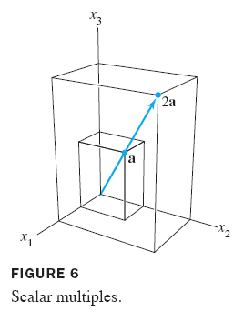
Vectors in Rn
Rn(r-n이라 발음)은 모든 목록의 모음 또는 정렬된 n-튜플이다. (n은 양수)
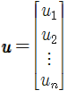
영벡터(zero vector)
모든 성분이 0인 벡터이고 0으로 표시한다.
Rn의 대수적 특성 Rn에 있는 모든 u,v,w와 모든 스칼라 c,d에 대해: 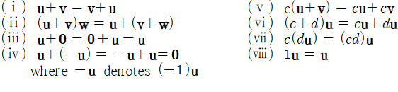 |
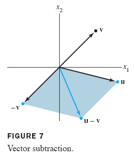
Linear Combinations
다음 식은 가중치(weight) c1,...cp를 가진 v1,...,vp의 선형 결합(linear combination)이다.

예: √3v1+v2, ½*v1 (=½*v1 + 0v2), 0 (=0v1 + 0v2)
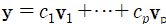 위 벡터식은 첨가행렬 (5)를 가진 선형계와 같은 해집합을 갖는다. 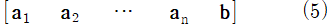 첨가행렬이 (5)인 선형계의 해가 존재한다면 b는 a1,...an의 선형 결합으로 만들어질 수 있다. |
정의 Span{v1,...,vp}은 다음 형태로 나타낼 수 있는 모든 벡터의 모음이다.  |
A Geometric Description of Span{v} and Span {u,v}
Span{v}
v의 모든 스칼라곱. 여기서 v는 R3에 존재하며 0이 아닌 벡터이다.
Span{u,v}
u,v,0을 포함한 평면. 여기서 u와 v는 R3에 존재하며 v는 r의 배수가 아니다.
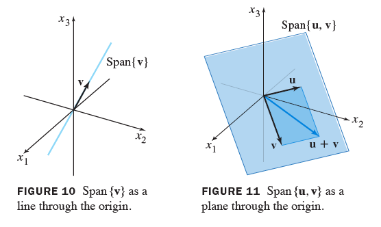
1.4 THE MATRIX EQUATION Ax=b
정의 A가 a1,...,an 열을 가진 m×n 행렬이고 x가 Rn에 존재한다면, A와 x의 곱 Ax는 A열과 x의 성분으로 구성된 선형 결합이다. 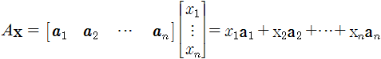 |
* A열 개수와 x 성분 개수가 같을 때만 Ax는 정의된다.
아래의 계는 벡터식 또는 행렬식으로 변형될 수 있다.
계
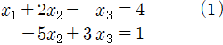
벡터식(vector equation)
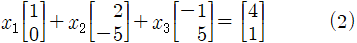
행렬식(matrix equation)
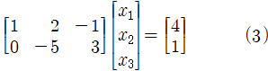
정리 3 A가 a1,...,an 열을 가진 m×n 행렬이고 b가 Rm에 존재하면 다음 행렬식은 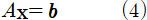 벡터식 (5)와 계수행렬 (6)과 같은 해집합을 갖는다. 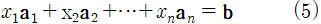 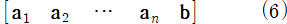 |
Existence of Solutions
Ax=b는 b가 A열의 선형 결합일 때만 해를 갖는다. |
정리 4 A를 m×n 행렬이라고 하자. 그러면 다음 문장은 논리적으로 같다. 즉, 특정 A에 대해 모든 문장이 전부 사실이거나 전부 거짓이다. a. Rm에 존재하는 b에 대해 Ax=b는 해를 갖는다. b. Rm에 존재하는 b는 A열의 선형결합이다. c. A열은 Rm을 생성(span)한다. d. A는 모든 행에 회전축 위치가 있다. |
* 정리4는 계수행렬에 관한 것이다.
Computation of Ax
단위 행렬(identity matrix, 기호 I)
대각선 방향만 1이 있고 나머지는 모두 0인 행렬
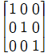
Properties of the Matrix-Vector Product Ax
정리 5 A가 m×n 행렬이고, u와 v는 Rn에 존재하는 벡터, c는 스칼라이면: a. A(u＋v) = Au＋Av; b. A(cu) = c(Au). |
1.5 SOLUTION SETS OF LINEAR SYSTEMS
Homogeneous Linear Systems
동차 선형계 (homogenoues linear system)
Ax = 0 형태로 나타나는 선형계. (A는 m×n 행렬, 0는 Rm에 존재하는 영벡터이다)
동차 선형계 Ax = 0은 최소 하나의 해 x=0를 갖는다. 해가 0이면 자명한 해(trivial solution)이다. Ax = 0을 만족하는 0이 아닌 벡터 x가 있으면 자명하지 않은 해(nontrivial solution)이다. 이 때 x는 전부 0인 성분을 가진 경우를 제외하고 0인 성분을 가질 수 있다.
동차식 Ax = 0이 최소 한 개 이상의 자유 변수를 가진다면 이 동차식은 자명하지 않은 해를 갖는다. |
동차식 Ax = 0의 해집합은 항상 Span{v1,...,vp}으로 표현될 수 있다. 만일 영벡터를 해로 가진다면 해집합은 Span{0}이다.
EXAMPLE 2 하나의 선형방정식은 여러 식을 가진 매우 단순한 계로 처리될 수 있다. 동차계 (1)로 이루어진 모든 해를 설명하라.
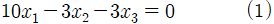
SOLUTION 행렬 표현을 할 필요가 없으므로 자유 변수의 관점에서 기본 변수 x1에 대해서 풀면 된다. 식 (1)은 x2와 x3가 자유변수이다. 따라서 식 (2)와 같이 표현할 수 있다.
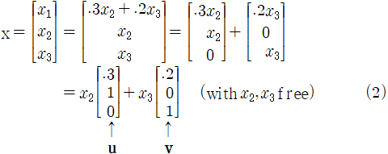
Parametric Vector Form
식 (1)은 암시적 설명(implicit description)이다. 식 (1)을 풀어서 나온 식 (2)는 명확한 설명(explicit description)이다.
식 (2)를 매개 벡터식(parametric vector equation)라고 부르며, 식의 해는 매개 벡터형태(parametric vector form)이라고 부른다. 일반식은 다음과 같다.
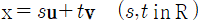
Solutions of Nonhomogeneous Systems
정리 6 식 Ax = b가 특정 b에 대해 일관적이고 p를 식의 해라고 하자. 그러면 Ax = b의 해집합은 w = p+vh 형태로 이루어진 모든 벡터들의 집합이다. (vh는 동차식 Ax = 0의 해이다) |
매개벡터 형태로 있는 일관적인 계의 해집합 작성하기 1. 첨가행렬을 기약사다리꼴 형태로 행 축소를 하라. 2. 기본 변수를 자유 변수로 표현하라. 3. 일반적인 해 x를 자유변수와 관계있는 벡터로 작성하라. 4. 자유변수를 매개변수로 사용하는 벡터의 선형결합으로 x를 분해하라. |
1.6 APPLICATIONS OF LINEAR SYSTEMS
교재 참조
★ 1.7 LINEAR INDEPENDENCE
정의 아래 벡터식이 자명한 해를 갖는다면, 색인된 벡터집합 {v1,...,vp}은 선형적으로 독립(linearly independent)이다. 가중치 c1,...,cp가 전부 0이 아닌 아래의 벡터식이 있다면 벡터집합 {v1,...vp}은 선형적으로 종속(linearly dependent)이다. (2) |
식 (2)의 가중치가 전부 0이 아닐 때 이를 v1,...,vp 사이의 선형 종속 관계(linear dependence relation)라고 한다.
Linear Independence of Matrix Columns
| 식 Ax = 0이 자명한 해를 가질 때에만, 행렬 A의 열은 선형적으로 독립이다(↔). (3) |
Sets of One or Two Vectors
오직 한 개의 벡터만 가진 집합은 이 벡터가 영벡터가 아니면 선형적으로 독립이다. v ≠ 0일 때, x1v = 0이 자명한 해를 가지기 때문이다. v = 0이면 집합은 선형적으로 종속이다. 왜냐하면 x10 = 0은 수많은 자명하지 않은 해를 가지기 때문이다.
| 두 벡터의 집합 {v1,v2}은 한 개의 벡터가 다른 벡터의 배수이면 선형적으로 종속이다. 벡터가 다른 벡터의 배수가 아니라면 선형적으로 독립이다(↔). |
Sets of Two or More Vectors
정리 7 - 선형적으로 종속인 집합의 특성 두 개 이상의 벡터를 가진 색인된 집합 S = {v1,...,vp}는 적어도 한 개의 벡터가 다른 벡터들의 선형결합이면 선형적으로 종속이다(↔). S가 선형적으로 종속이고 v1 ≠ 0이면 어떤 vj (j>1) 는 이전 벡터들 v1,...,vj-1의 선형결합이다. |
Warning: 선형적으로 종속인 집합에 있는 벡터가 이전 벡터들의 선형결합이 아닌 경우도 있다. (참조: Practice Problem 1(c))
EXAMPLE 4 가 있다고 하자. u와 v에 의해 생성된 집합을 설명하라. 그리고 {u,v,w}가 선형적으로 종속이면 왜 벡터 w가 Span{u,v}에 존재하는지도 설명하라.
SOLUTION 벡터 u,v는 서로 배수가 아니기 떄문에 선형적으로 독립이다. 따라서 R3에 존재하는 평면을 생성한다. Span{u,v}은 x3=0이므로 x1x2-평면이다. 만약 w가 u,v의 선형결합이면 {u,v,w}는 정리 7에 의해 선형적으로 종속이다. 역으로 {u,v,w}가 선형적으로 종속이라고 가정해보자. 그러면 정리 7에 의해 벡터 w는 이전 벡터들의 선형결합이다. 왜냐하면 u ≠ 0이고 v는 u의 배수가 아니기 때문이다.
정리 8 어떤 집합이 각 벡터에 있는 성분보다 많은 벡터를 가지고 있으면 그 집합은 선형적으로 종속이다. 즉, 어떤 집합 {v1,...,vp} in Rn은 p > n이면 선형적으로 종속이다. |
증명 A = [v1 ... vp]라고 하자. A는 n×p이고 식 Ax = 0은 p개 벡터를 가진 n개 식으로 이루어진 계와 일치한다. p ＞ n이면 식보다 많은 변수를 갖는다. 그러므로 Ax = 0은 자명하지 않은 해를 갖고 A열은 선형적으로 종속이다. Figure 3 참조.
Figure 4는 선형적으로 종속이지만 각 벡터가 다른 벡터의 배수가 아닌 것을 보여준다.
정리 9 집합 S = {v1,...,vp} in Rn가 영벡터를 포함하면 S는 선형적으로 종속이다. |
증명 벡터 번호를 다시 매긴 후에 v1 = 0이라고 가정해보자. 그러면 식 1v1 + 0v2 + … + 0vp = 0 은 S가 선형적으로 종속임을 보여준다.
정리 7 증명 만약 집합 S에 있는 어떤 vj가 다른 벡터들의 선형결합과 같다면 vj는 식의 양쪽에서 빼질 수 있다. 이는 (-1)vj를 가진 선형종속관계를 만든다. [예를 들면, v1 = c2v2 + c3v3이면 0 = (-1)v1 + c2v2 + c3v3 + 0v4 + … + 0vp.] 따라서 S는 선형적으로 종속이다. 역으로 S는 선형적으로 종속이다라고 가정하자. v1 = 0면, v1은 S에 있는 다른 벡터들의 (자명한) 선형결합이다. v1 ≠ 0 이고 가중치 c1,...,cp가 전부 0이 아니면, 다음 식과 같다.  j를 cj≠0인 가장 큰 아래첨자라고 하자. j＝1이면 c1v1＝0이다. v1 ≠ 0이기 때문에 이것은 불가능하다. j＞1이면 |
1.8 INTRODUCTION TO LINEAR TRANSFORMATIONS
변환 (transformation(or function or mapping), 기호 T)
Rn에 존재하는 벡터x를 Rm에 존재하는 벡터T(x)에 할당하는 규칙이다. Rn을 T의 정의역(domain), Rm을 T의 치역(codomain)이라 부르며, 기호는 T : Rn → Rm 이다.
상 (image)
Rn에 존재하는 x에 대응하는 Rm에 존재하는 벡터T(x)
공역 (range)
모든 상의 집합
Matrix Transformation
Rn에 존재하는 x에 대해 T(x)는 Ax로 계산된다.(A는 m×n 행렬) 기호는 x ↦ Ax이다. 상 T(x)는 Ax이기 때문에 공역 T는 A열의 선형 결합 집합이다.
Figure 3은 변환 x ↦ Ax가 x1x2-평면 위에 있는 점들을 투사할 때 나타난다.
가로엇갈림 변환(shear transformation)은 좌표의 하나를 고정시키고 다른 몇 개의 좌표를 이동시키는 변환을 말한다.
Linear Transformation
정의 변환 (또는 맵핑) T는 다음 조건과 같다면 선형적이다. T의 정의역에 있는 u,v에 대해서 모든 스칼라 c와 T의 정의역에 있는 u에 대해서 |
모든 행렬변환(matrix transformation)은 선형변환이다. 선형변환이 행렬변환이 아닌 경우는 4,5장에서 다룬다.
T가 선형변환이면, 그리고 정의역 T에 있는 벡터 u,v와 스칼라 c,d에 대해서 |
(4)를 반복적용하면 (5)가 나온다. 공학과 물리학에서 이를 중첩 원리(superposition principle)라고 한다.
1.9 THE MATRIX OF A LINEAR TRANSFORMATION
정리 10 T : Rn → Rm을 선형변환이라고 하자. 그러면 유일한 행렬 A가 존재하고 다음 식이 성립한다. for all x in Rn 사실 A는 j번째 열이 T(ej) 벡터인 m×n 행렬이다. ej는 Rn에 존재하는 단위행렬의 j번째 열이다. (3) |
증명 x = Inx = [e1 … en]x = x1e1 + … + xnen 이라고 하자. T의 선형성을 이용해 계산하면 다음 식이 나온다.
(3)에 있는 A를 선형변환에 대한 표준행렬(standard matrix)이라고 한다.
모든 Rn에서 Rm으로 가는 선형변환은 행렬변환이다.
EXAMPLE 3 T : R² → R²를 시계 반대방향으로 원점에서 양수 φ도를 통과하는 R²에 속한 각 점을 회전하는 변환이라고 하자. 그러한 변환이 선형인 것을 기하학적으로 나타낼 수 있다. 이 변환의 표준행렬 A를 찾아라.
SOLUTION
은 으로 회전하고, 은 으로 회전한다. Figure 1을 보자. 정리 10에 의해서,Geometric Linear Transformations of R²
표 1-4는 평면의 일반적인 기하학적 선형변환을 묘사한다. e1과 e2의 상을 보여주는 것 대신에 표는 변환이 단위 사각형(unit square)에 적용되는 것을 보여준다. (Figure 2)
Existence and Uniqueness Questions
정의 Rm에 존재하는 각 b가 Rn에 존재하는 최소 한 개인 x의 상이면, 사상 T : Rn → Rm는 Rm 안에 모두 존재한다. |
정의 Rm에 존재하는 각 b가 Rn에 존재하는 최대 한 개인 x의 상이면, 사상 T : Rn → Rm 일대일 대응이다. |
표 4에 있는 정사영 변환(projection transformation)은 일대일 대응이 아니고 R²를 R²에 대응시키지 않는다. 표 1,2,3에 있는 변환은 일대일 대응이고 R²를 R²에 대응시킨다.
정리 11 T : Rn → Rm을 선형변환이라고 하자. T(x) = 0이 자명한 해를 갖는다면 T는 일대일 대응이다(↔). |
주목: 정리 "문장 Q가 참이면 문장 P는 참이다(↔)"를 증명하기 위해서 두 가지가 필요하다: (1) P가 참이면, Q는 참이다. (2) Q가 참이면, P는 참이다. 두 번째 조건은 또한 (2a)를 증명함으로써 성립될 수 있다. (2a) P가 거짓이면, Q는 거짓이다. (이를 대우對偶(contrapositive reasoning)라고 한다.) 이 증명은 P와 Q가 모두 참이거나 또는 모두 거짓임을 보여주기 위해 (1)과 (2a)를 사용한다.
증명 T가 선형적이므로 T(0) = 0이다. T가 일대일 대응이면, T(x) = 0은 최대 한 개 해를 가지며 따라서 자명한 해를 갖는다. T가 일대일 대응이 아니라면, Rn에 존재하는 최소 두 개 이상의 벡터의 상 b가 존재하게 된다. 그러한 벡터를 u,v라고 하면, T(u) = b이고 T(v) = b이다. 그러나 T는 선형적이기 때문에
T(u-v) = T(u) - T(v) = b - b = 0
u ≠ v이기 때문에 벡터 u-v는 영벡터가 아니다. 그러므로 T(x) = 0는 한 개 이상의 해를 갖는다. 정리에 있는 두 조건은 모두 참이거나 모두 거짓이다.
정리 12 T : Rn → Rm을 선형변환이라고 하고, A를 T에 대한 표준행렬이라고 하자. 그러면 다음 문장이 성립한다. a. A열이 Rm을 생성하면 T는 Rn을 Rm에 대응시킨다(↔). b. A열이 선형적으로 독립이면 T는 일대일 대응이다(↔). |
주목: "필요충분조건" 문장은 함께 연결될 수 있다. 예를 들면, "P가 Q의 필요충분조건이다"라는 명제가 있고 "Q가 R의 필요충분조건" 명제가 있으면, "P는 R의 필요충분조건이다"는 참이다.
증명
a. Rm에 존재하는 각 b에 대해 Ax = b는 일관적이면(다르게 표현하면, 모든 b에 대해 T(x) = b는 최소 한 개의 해를 가지면), 1.4절의 정리 4에 의해 Rm에 존재하는 A열은 Rm을 생성한다. 마찬가지로 T가 Rn을 Rm에 대응시키면 A열은 Rm을 생성한다.(↔).
b. T(x) = 0과 Ax = 0은 표기만 다를 뿐 같은 식이다. 따라서 정리 11에 의해 Ax = 0이 자명한 해를 갖는다면 T는 일대일 대응이다. 1.7절의 문장 (3)에도 나와 있듯이, 이는 A열들이 선형적으로 독립일 때도 마찬가지이다(↔).
정리 12에 있는 문장 (a)는 "Rm에 존재하는 모든 벡터가 A열의 선형결합이면 T는 Rn을 Rm에 대응시킨다(↔)." 문장과 같다. (1.4절의 정리 4 참조)